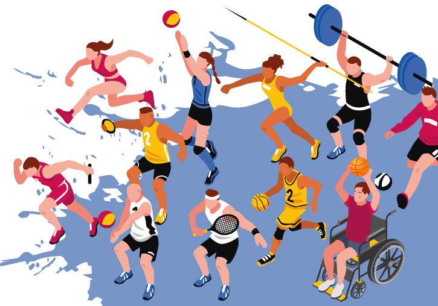

First slide label
No pretendas hacer todo perfecto a la primera, las cosas difíciles llevan su tiempo.

Second slide label
El verdadero fracaso no es perder, sino no atreverse a intentarlo.

Third slide label
“No te midas por lo que has logrado, sino por lo que deberías haber logrado con tu capacidad”

Third slide label
Cuanto más hacemos, más podemos hacer
Third slide label
Puedo porque creo que puedo

Third slide label
La persistencia puede cambiar el fracaso en un logro extraordinario

Third slide label
Tu mayor oponente no es la otra persona. Es la naturaleza humana
Historia deportiva en Honduras, deportes más practicados e importantes del país
01 de marzo 2024 por Jada Hernndez AmayaConoce cómo ha sido la historia deportiva en Honduras, cuáles de esos deportes han sido los más practicados en el país y cuáles están en crecimiento.
Honduras es un país que tiene una rica historia deportiva, pues, desde tiempos antiguos, los hondureños han participado en diferentes deportes y han demostrado su habilidad y destreza en competencias nacionales e internacionales.
Uno de los deportes más antiguos que se practicaron en Honduras fue el juego de pelota, el cual se jugaba en una cancha rectangular, donde dos equipos intentaban marcar puntos golpeando una pelota con sus caderas, codos y antebrazos.
Cabe resaltar que, la pelota de este deporte estaba hecha de caucho y tenía un diámetro de unos 20 centímetros.
El juego de pelota era muy popular entre los mayas y los aztecas, y se cree que llegó a Honduras durante la época precolombina.

Deportes más practicados en Honduras
Al ser un país con una gran pasión, a lo largo de la historia deportiva en Honduras han surgido varios deportes que se han convertido en los favoritos de los "catrachos".
Desde fútbol hasta boxeo, la nación hondureña tiene una gran variedad de deportes para elegir, entre ellos están:
- Fútbol
- Béisbol
- Baloncesto
- Boxeo
- Voleibol
- Natación
-Atletismo